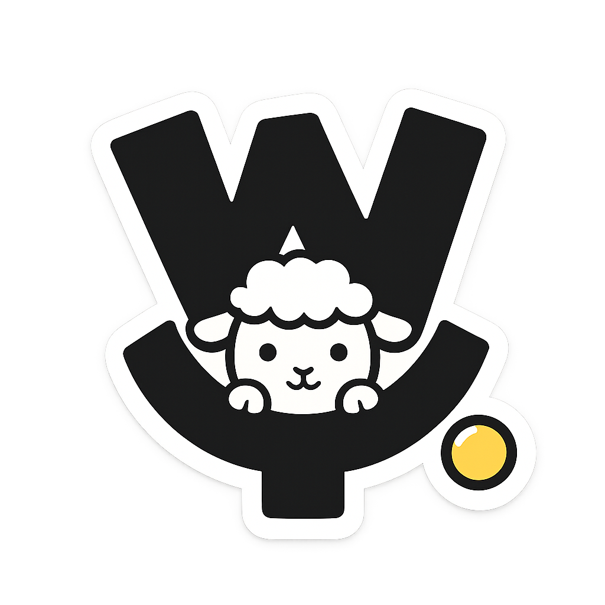
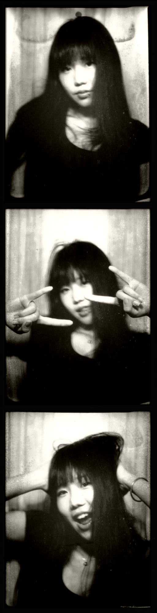
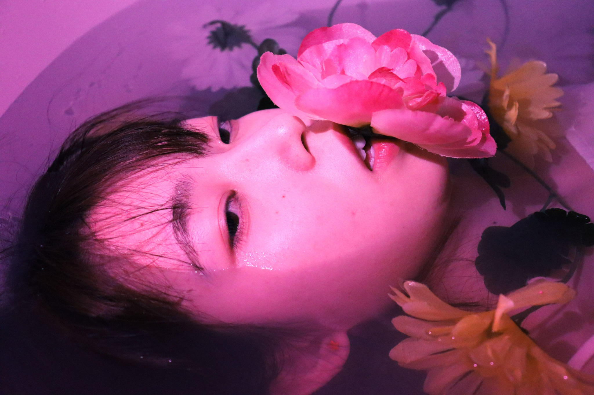
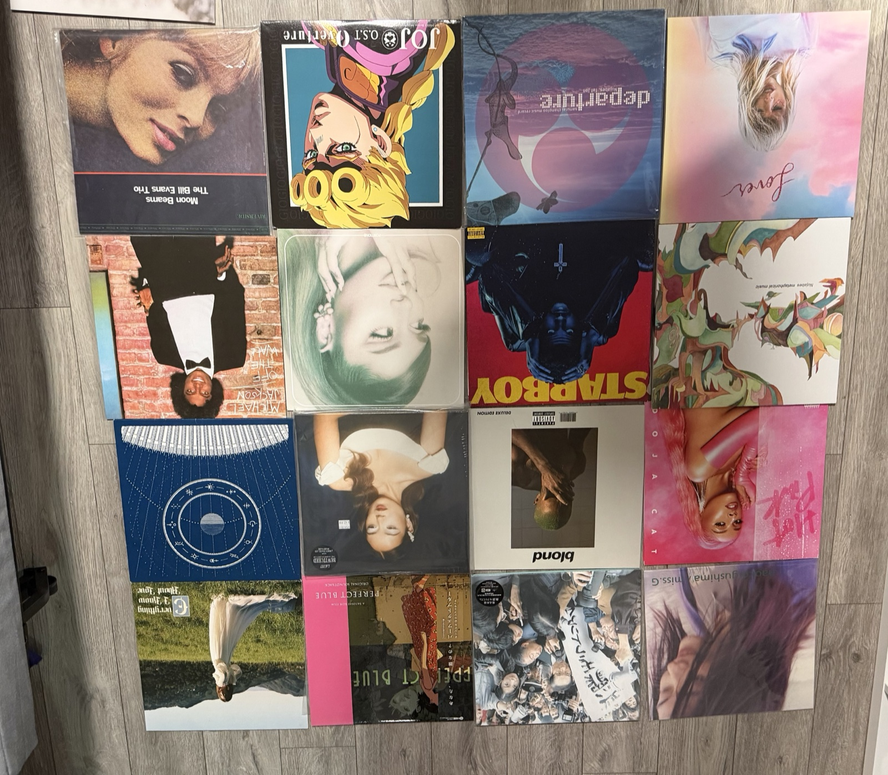
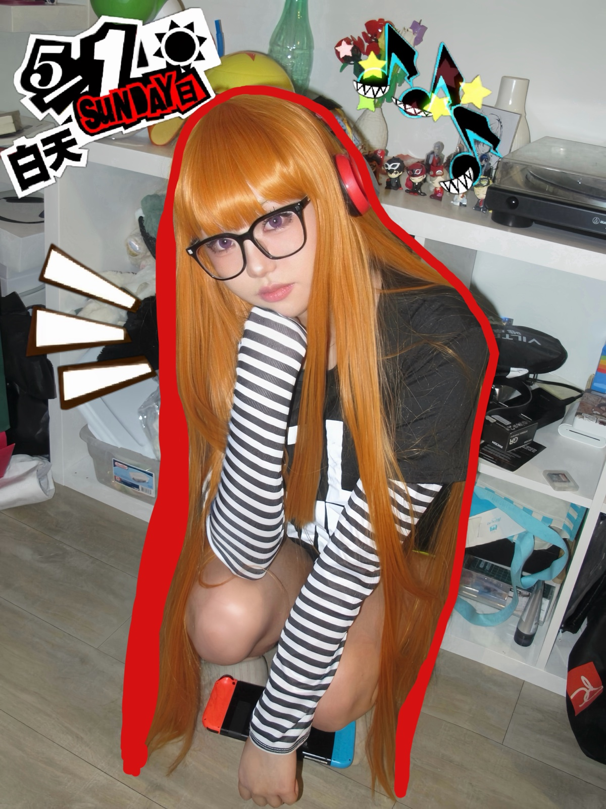
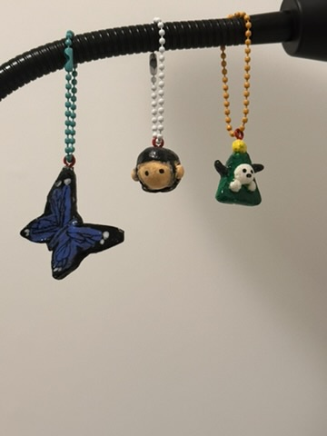
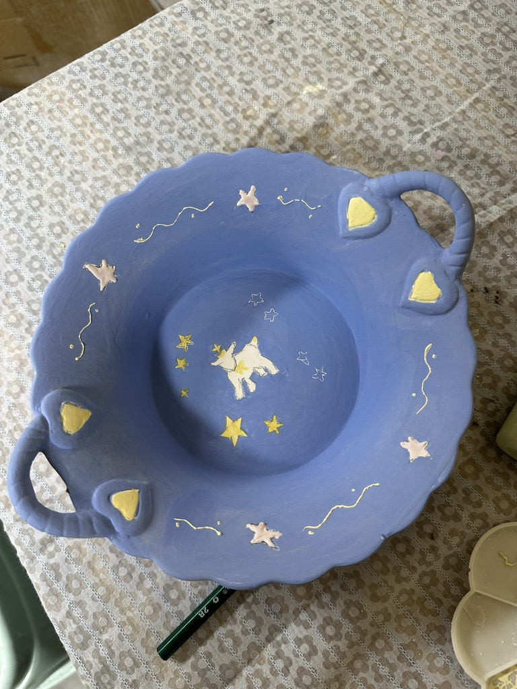
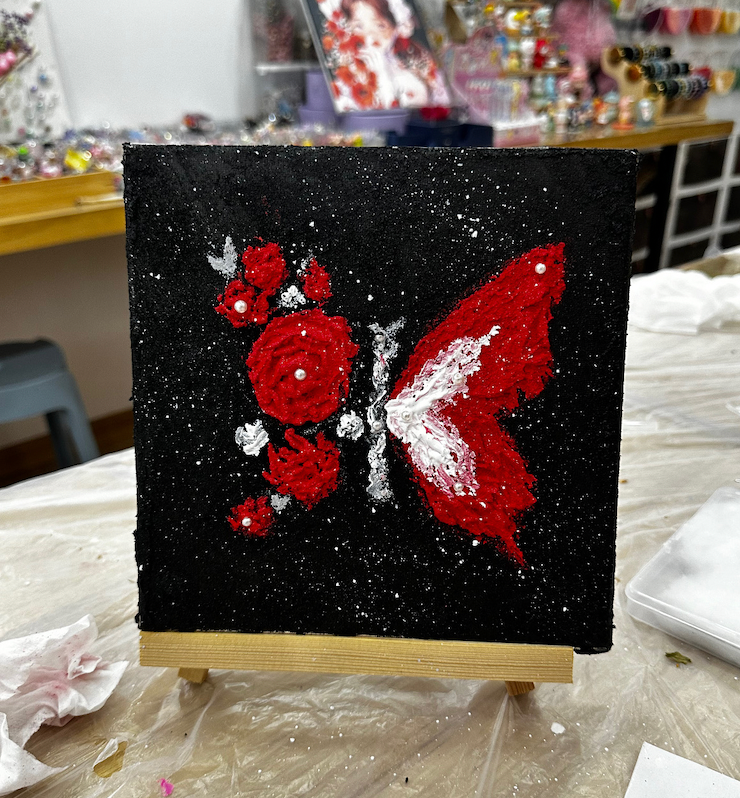

ASUNA'S PHOTOBOOTH
A LITTLE ABOUT ME
TORONTO · 2026
- NAME
- Wenshu / Asuna
- OCCUPATION
- UX Designer
- CURRENTLY
- Ontario XD Studio
PERSONAL INGREDIENTS
- Curiosity
- Extra shot
- Overthinking
- A little too much
- Visual details
- Always
- Random inspirations
- Unlimited

Wenshu YangAbout
I have a habit of asking "but why?" one too many times.
Turns out, being a little too curious comes in handy when you're a UX designer.
With a background in digital marketing and product operations, I enjoy turning messy problems into thoughtful, intuitive experiences, with a little personality along the way.
Currently: Experience Designer Coop @ Government of Ontario's XD Studio

A LITTLE ABOUT ME
TORONTO · 2026
A few things about me, if you're curious.
I started in digital marketing, learning what catches people's attention. Then came product operations, where I became more curious about what happened after the click.
Somewhere along the way, I realized I was less interested in getting people to click a button, and more interested in why they needed to click it in the first place.
That's what led me to UX — and I haven't stopped asking questions since.
I'm a big believer in sharing ideas before they're fully polished. I like asking questions, sketching out possibilities, and figuring things out with others.
I bring my own point of view, but I'm not afraid to change my mind when someone brings a better one.
For me, good design is as much about the conversations along the way as the final outcome.
When I'm not designing, I'm probably taking photos, listening to music on repeat, watching anime, making little things, or getting lost in fashion editorials.





